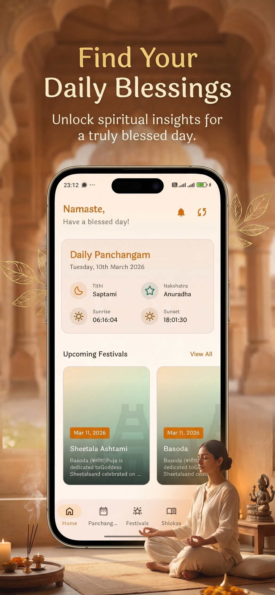

Your Daily Spiritual Companion
Awaken your daily devotion and bring ancient Vedic wisdom into your life. Plan your day with accurate Panchanga, read the Bhagavad Gita, track chants, and celebrate festivals in a serene, distraction-free environment.

Find Serenity in the Digital Age
We believe technology should support, not distract from, your spiritual journey. Bhakti365 is crafted to bring peace, intention, and ritual back into your day.
Live Every Day with Dharma
Understand your daily duty. Receive guidance, keep track of astrological phases, and live mindfully in tune with cosmic order.
Learn Ancient Wisdom
Explore the timeless scriptures like the Bhagavad Gita. Read translations and transliterations written for the modern world.
Practice Mindfully
Integrate short mantras, chants, and structured Jap meditations into your busy morning or evening routines seamlessly.
Step Inside the App
Explore our beautiful, distraction-free screens crafted for deep practice, contemplation, and daily ritual.
Sacred Tools for Daily Life
Everything you need for your daily spiritual path, unified under a singular, beautifully designed interface.
Daily Panchang
Accurate astronomical calculations including Tithi, Nakshatra, Sunrise, and Sunset. Know Rahu Kalam and Abhijit Muhurtha times to plan your daily activities.
Bhagavad Gita
Explore all 700 verses of the Gita. Read side-by-side Sanskrit, English transliteration, word-by-word translations, and comprehensive summaries.
Mantras & Chants
Listen to professionally recorded high-quality audio loops of Vedic mantras. Includes Sanskrit texts and meaning guides.
Festival Calendar
Stay notified of upcoming fasting days, Ekadashis, Vratas, and prominent Hindu festivals across the year.
Digital Jap Mala
A virtual Jap Mala directly inside your app. Tap the center bead to count your chants. Perfect for focus and daily practice on the go.
Rashi Calculator
Calculate your Vedic Moon sign (Rashi) and Nakshatra based on your birth details for personalized Vedic insights.
Nearby Temples
Locate prominent Hindu temples near your current position with routes, timings, and deity details.
Offline First
Never worry about poor connections. All content is saved locally on your device for immediate, offline access.
Privacy Centered
We collect zero analytics, require no login, and store no personal details. Your spiritual path is personal and private.
Interactive Panchangam
Experience the precise astronomical widget built directly into Bhakti365. Toggle between days to align your practices with cosmic timings.
Vedic Calendar
Yearly Festival Cycle
Align with the flow of traditional celebrations. Bhakti365 tracks solar, lunar, and regional calendar events to ensure you stay connected.
Maha Shivratri
The great night of Lord Shiva. Honored with fasting, night-long vigil, prayers, and chants of Panchakshari Mantra, celebrating the wedding of Shiva and Parvati.
Rama Navami
Celebrating the birth of Lord Rama, the ideal king and human (Maryada Purushottama). Marked by reading the Ramayana, fasting, and singing devotional bhajans.
Krishna Janmashtami
A joyous festival celebrating the descent of Lord Krishna (Avatar of Vishnu). Observed with mid-night prayers, devotional worship, and breaking of fasts at dawn.
Ganesh Chaturthi
Commemorating the arrival of Lord Ganesha, the Lord of Obstacles, Wisdom, and New Beginnings. Families install clay idols and offer sweet Modakas.
Diwali
The festival of lights symbolizing the victory of light over darkness and knowledge over ignorance. Commemorates Lord Rama's return to Ayodhya after 14 years of exile.
Daily Gita Contemplation
Delve into the eternal dialogue of Sri Krishna and Arjuna, providing guidance for actions, mind control, and peace.
मा कर्मफलहेतुर्भूर्मा ते सङ्गोऽस्त्वकर्मणि॥
mā karma-phala-hetur bhūr mā te saṅgo ’stv akarmaṇi ||
Crafted for a Pure Experience
Bhakti365 is designed with high standards of software quality and attention to detail. No clutter, no distractions.
Offline First
Calculations, shlokas, and charts are stored locally on a lightweight database. Use it in remote temples, planes, or quiet mountain retreats without internet.
No Login Required
Start practicing immediately. We do not require accounts, phone numbers, or email sign-ups, removing all friction from your spiritual path.
Privacy Focused
We track absolutely nothing. No analytics packages are embedded, and all search details and Mala counts remain strictly inside your device's memory.
Beautiful, Fast Performance
Built with Kotlin Multiplatform, compiling directly to native machine code. It loads in milliseconds, saves storage space, and has zero rendering lag.
Development Roadmap
See our continuous development. We aim to keep adding features that enrich your spiritual practices over time.
Phase 1
Released- Vedic Panchangam Calculations
- Bhagavad Gita Verse Reader
- Festival & Fasting Calendar
- Offline local database architecture
Phase 2
Active- Interactive Audio Mantras
- Digital Mala Counting Log
- Auspicious Time Alerts (Muhurthas)
- Premium Lockscreen Widgets
Phase 3
Planned- AI Spiritual Guide (Gemini API)
- Wear OS & Watch Companion App
- Vedic Temple Finder & Nav
- Sanskrit Learning Companion
Frequently Asked Questions
Common questions about the app's features, data calculations, privacy, and roadmap.